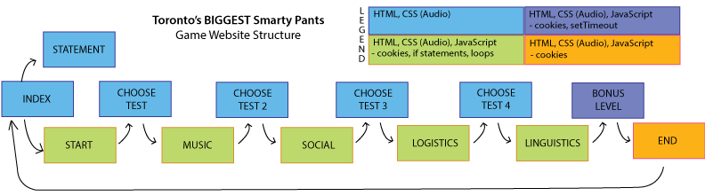

Toronto's BIGGEST Smarty Pants
My A2 has taken on a game approach and is under the standards of the Javascript oriented category. It features a total of 8 pages, more than 2 of which have Javascript functionalities in them, and more than 2 of the categories from the Javascript list have been used. Specifically, if statements (2), loops (4), cookies (7), as well as setTimeout (11). The definition of play that stood out to me the most was "Engage in activity for enjoyment and recreation rather than a serious or practical purpose" (from Oxford English Dictionary) And "to do something in sport that is not to be taken seriously." (from Dictionary.com). Similar statements were made in the various readings that were done through out the term. Specifically, the readings from Anna Anthropy. In the reading, it is mentioned to use levels as a medium to reach the grand finale (151-2 : Chapter 7). Another aspect mentioned by Anna Anthropy is the importance of the end of the story. (155) And, "games tell stories that communicate the values of their creators[...]"(67). A final note from the Bogost Rhetoric Video Game reading that influenced this project was the section on Play. He said, "play is a distraction useful only to let off the necessary steam to allow kids (or adults) to get back to the serious business of learning (or working)." (pg. 4 in PDF viewer).
The game features a quiz which claims to be able to tell you if you are smart as you think you are. Based off 4 categories of questions, the quiz determines this. At the end, you are given the final verdict. Will you have to redeem yourself and play again, or are you truly as smart as they come?
The concept of the game is to combine play with something that is not commonly associated with play - learning! While some people may look at the questions and not have a clue as to what the answer is - in the end, they will have gained some knowledge through the various facts and riddles.
At another level of thinking, the game also challenges the definition of play. Where the definition of play says that to play is to engage in an activity for pleasure and not to take the activity seriously, then how can learning be taught through play, as so many people prefer?
The game features a different ending, depending on how the player has faired through the quizzes. The ending could be encouragement, or a reality check, depending on the performance of the player. While the game follows conventional methods of games, in scoring and the objective, the focus of the game is self-reflection. The aim is to make people realize that perhaps they don't know everything they think they do. And if they think they really don't, then maybe they need to start giving themselves some credit because they really are smarter than they think.
Another question the player might ask is; Am I really the smartest person based on these 4 categories? It's just a game - so it shouldn't be taken seriously - correct?
The main takeaway I was aiming for from this game is something I firmly believe in. And that is that knowledge and learning can be associated with play. While the definition of play is true in saying it is a task that is to be completed while not taking it seriously, learning does not fall into the category of things that should be deemed serious. Also, it was my aim to get people to realize that perhaps knowing everything isn't a good thing. It's more fun to learn - and more rewarding! Although the questions in the quiz are hardly intelectual.
1) The following pages contain JavaScript and account for the JavaScript page minimum requirement of two (2) pages.

JavaScript sources are listed below:
Creative Commons Licensed Media Sources are listed below: